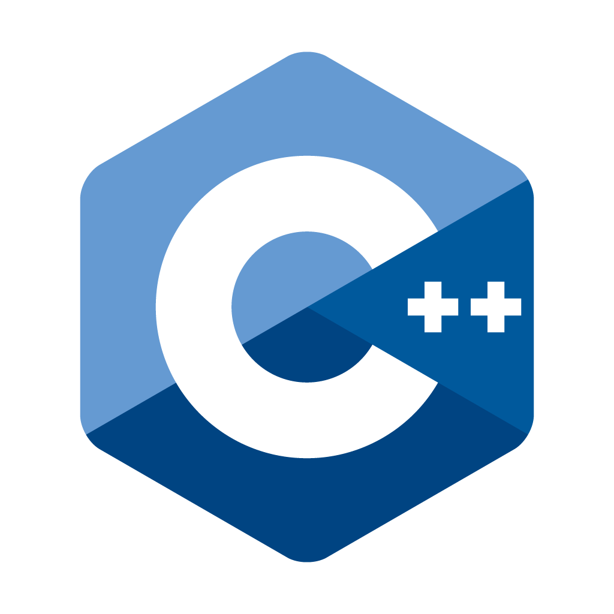
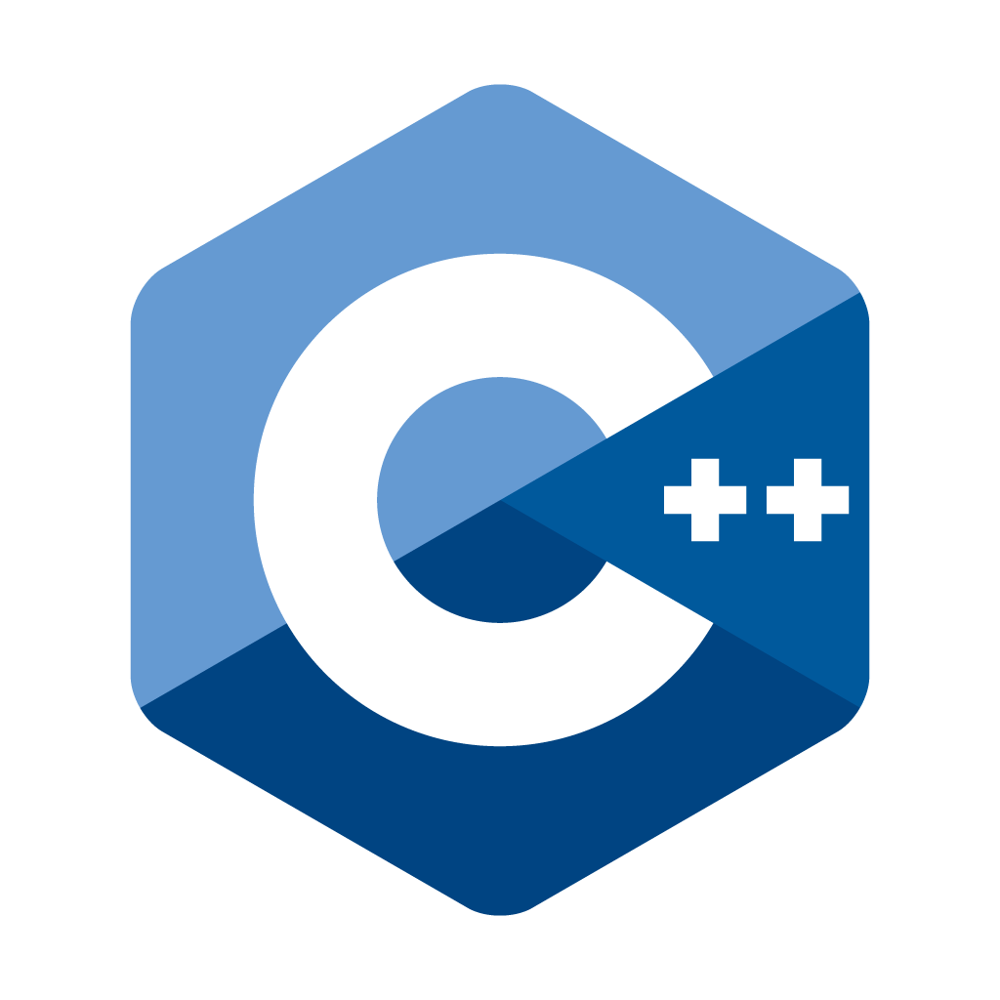
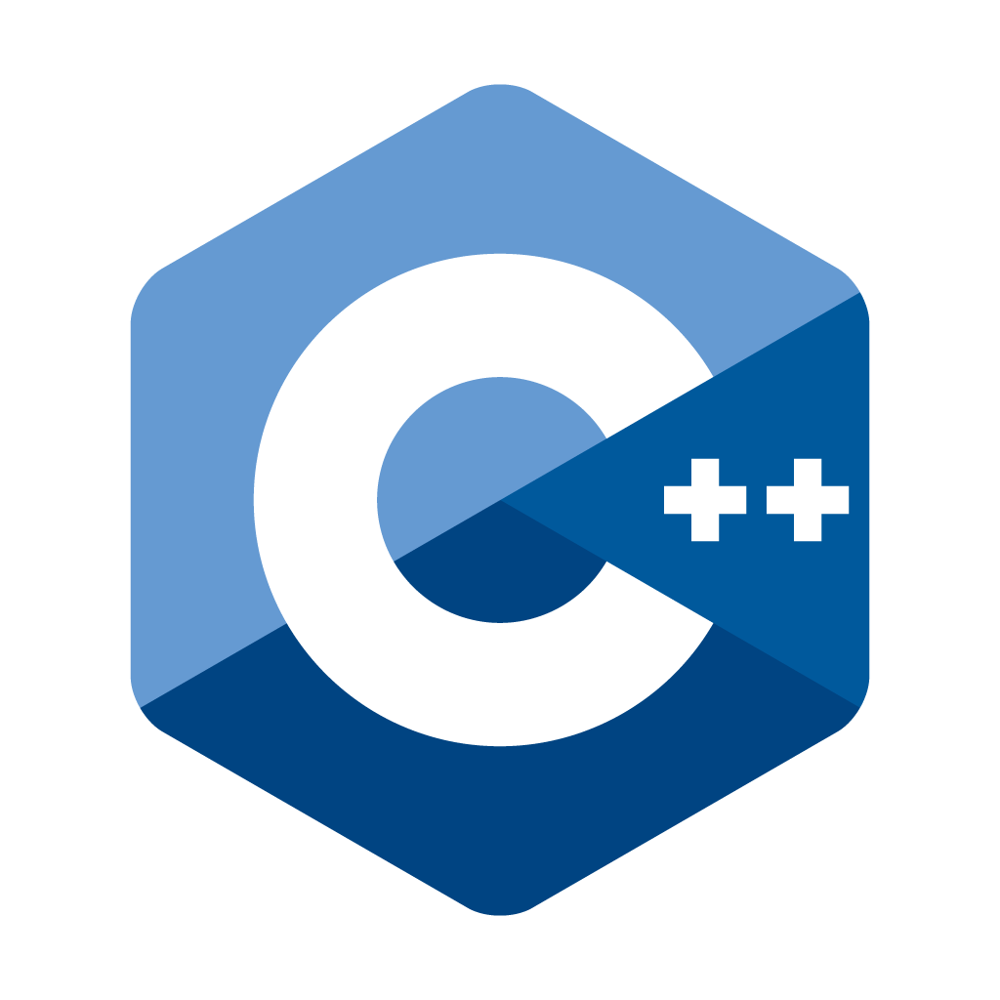

Languages & Technologies I Know
Here are some of the programming languages and technologies I've worked with:
 



Soon-to-be Computer Science graduate(2024-2028), I am eager to continue exploring the inspiring and innovative field of Web Development. I also have experience in marketing and PR handling for various projects.
Here are some of the programming languages and technologies I've worked with:

As a Front-End Developer and an experienced Marketing and PR Handler, I've had the opportunity to work on a diverse range of projects, blending technical expertise with creative communication strategies. Here are some highlights of my work: